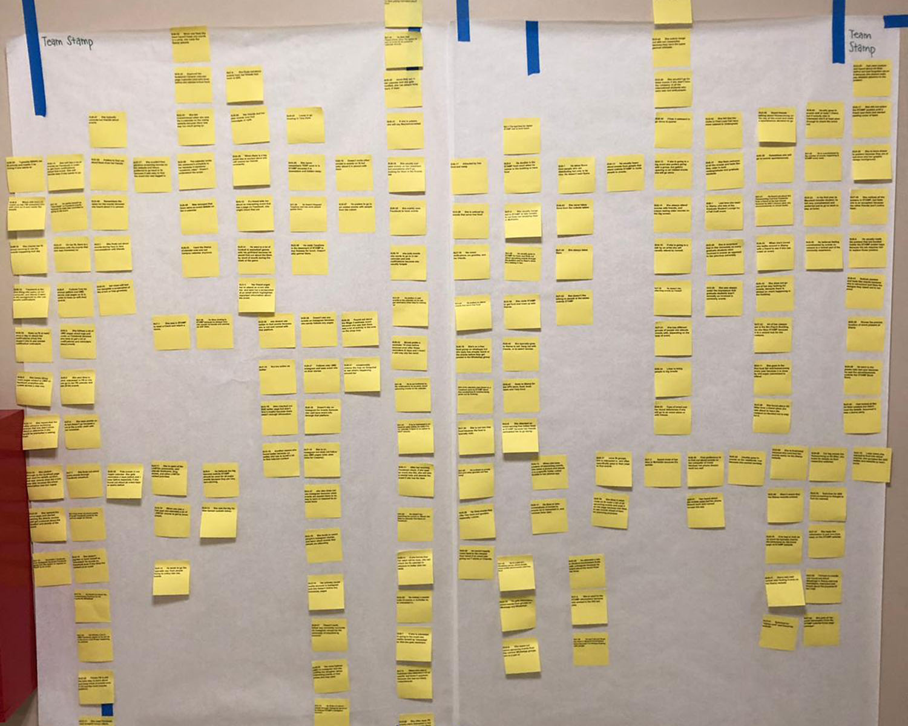
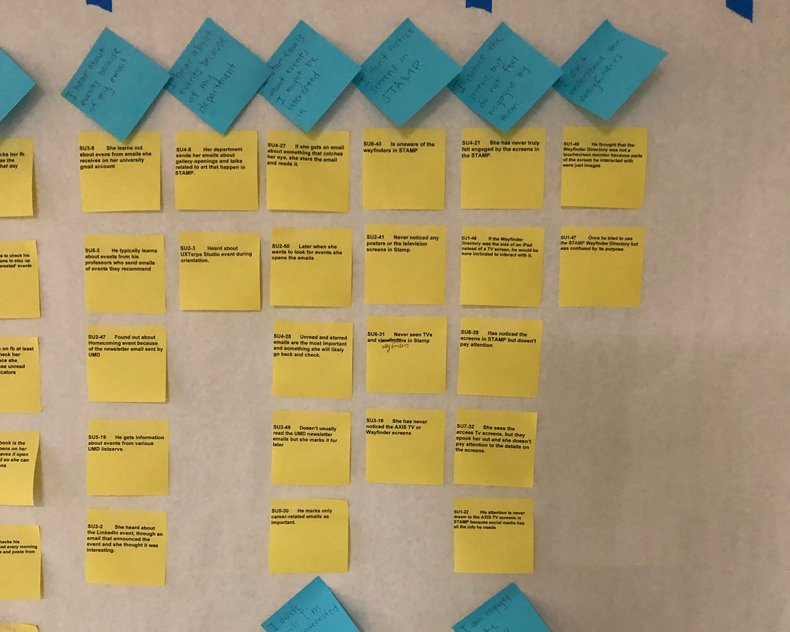
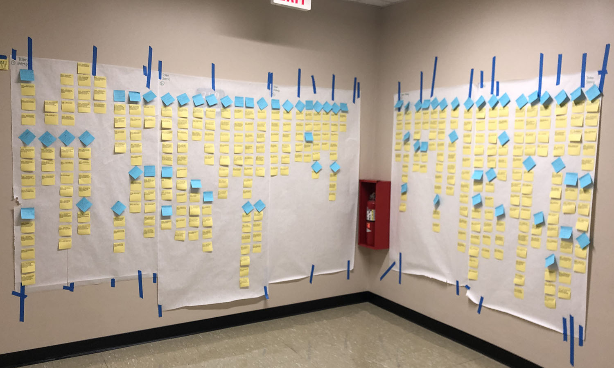
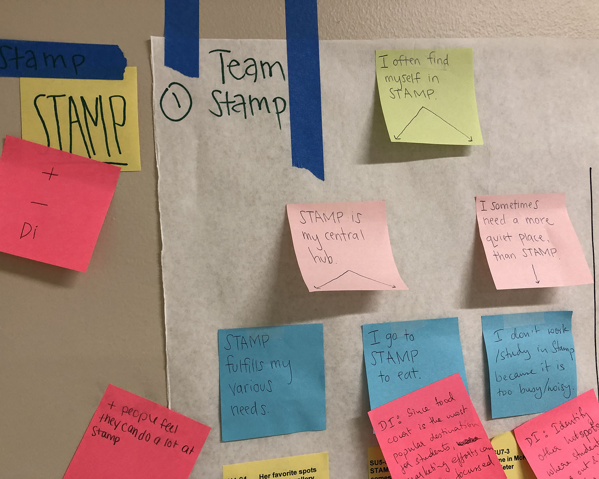
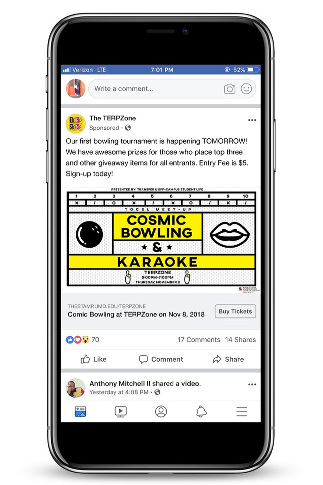
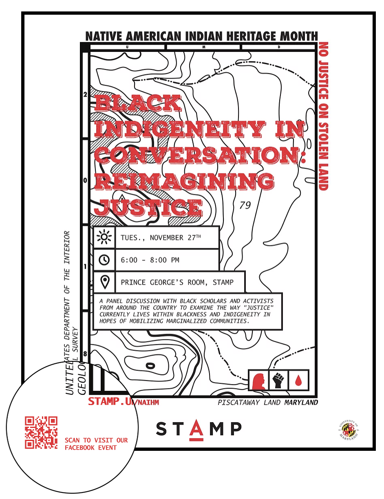
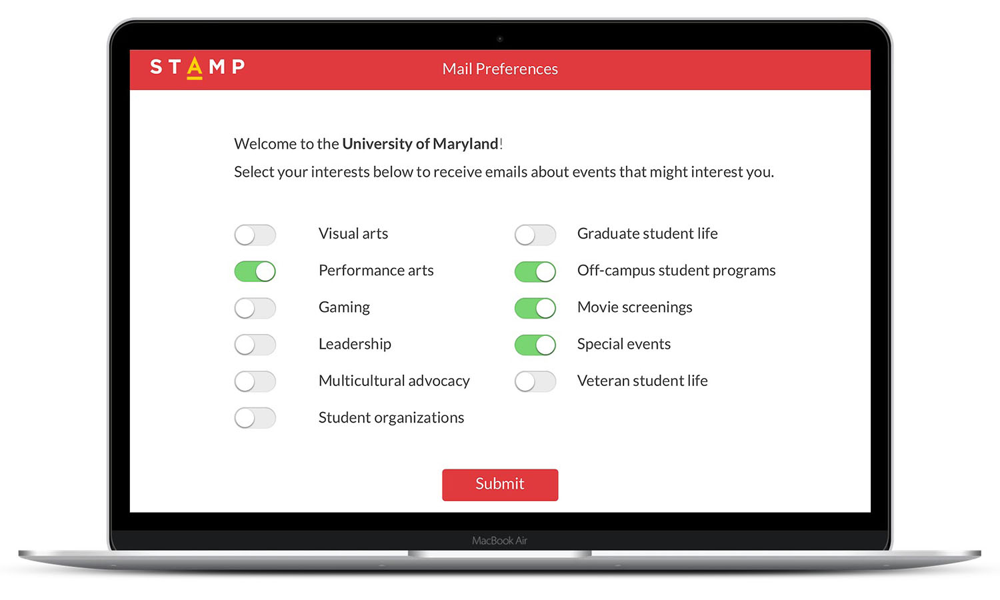
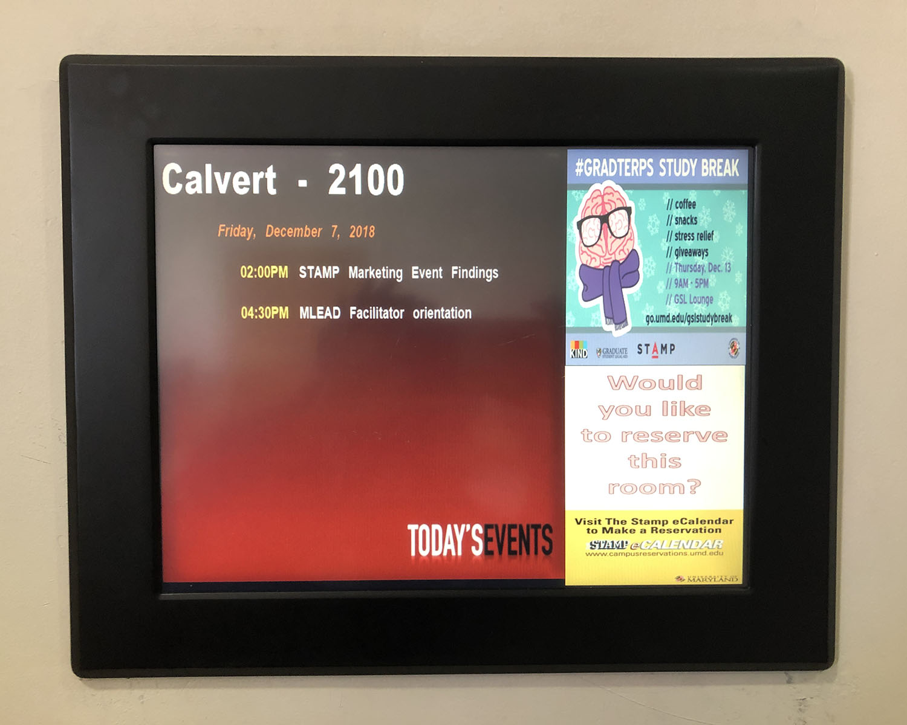

The Adele H. Stamp Student Union (STAMP) is the student activity
center at the University of Maryland. It aims to nurture a welcoming
and inclusive community through events, resources, and
intentional programming. With over 3,000 events happening in and
around the building each year, it is nearly impossible to keep students
in the loop. Conversely, students have a hard time finding events that
interest them.
Client: Eva Quintos Tennant, Assistant Director of Marketing and Communications at STAMP
Team Members: Kaushalya Ganesh, Dawson Hoppes, Ashrith Shetty
The Challenge
How can students connect?
The university is home to 40,000+ students who have a wide range of social
media preferences, interests, and habits. It is becoming increasingly difficult
for the marketing and communications department to effectively communicate and
engage with the community.
Despite having a dedicated website, the departments of STAMP use various channels
of communication (social media, email newsletters, etc.) and none to their best
potential. We felt the need to assist STAMP Marketing in finding ways to improve
their platforms of communication. A semester-long user research project was
conducted to understand how students discover & track events that take place at
the University, specifically focusing on those that take place in STAMP.
The Process
Process Overview
Develop initial project assumptions
Meet with client
Refine project focus
Conducted contextual inquiries
Interview interpretation sessions
Helped build various models (i.e. affinity diagram, day in the life, sequence)
Designed product concepts based off team research
Developed final client presentation
Project Inspiration
As students at the University of Maryland, our research team is in and around
STAMP at least 4-5 times a week, and we still felt like we were unprepared and
unknowledgeable of the events happening around us.
Through talking with other students we found that the website was hard to navigate,
and did not easily present relevant information about upcoming events.
Initial Assumptions
Based off of our initial contact with other students and our personal experiences,
we thought it best to focus our efforts on the problems with the STAMP website.
Client Meeting
We presented our problem statement and initial assumptions to our client.
Through this meeting we learned that the initial scope of our project was too
narrow.
While the website is a resource some students use, the vast majority find out
about events through alternative channels. We were asked to discover which
channels were most effective, and where there was room for improvement in the
marketing team's strategies.
Project Focus
Evaluate the existing pain points of the STAMP
event discovery experience and discover additional breakdowns
Meet with students to learn more about
the channels they actually use to find events
Identify the most effective communication
channels for STAMP to pursue in the future
The Research Method
Contextual Inquiry
Through the contextual design process, we aimed to discover new
insights into the way students find events, and propose the best
ways for the marketing team to reach their audience.
Since our goal was to improve the experience of students
across campus, we decided to interview students that
represented the following groups:
Develop initial project assumptions
Meet with client
Refine project focus
Conducted contextual inquiries
Interview interpretation sessions
Helped build various models (i.e. affinity diagram, day in the life, sequence)
Designed product concepts based off team research
Developed final client presentation
Above is a graphical representation of the characteristics our users
possessed
During our interviews we primarily focused on gathering
data about the following:
How do students learn about upcoming events?
What social media channels do they interact with?
What do students typically go to STAMP for?
Do they attend events alone or with others?
What type of events do they attend?
Where do they keep track of information about
upcoming events they are interested in?
Observe how students use their choice of social
media for event finding
Observe how students navigate the STAMP website
to find an event
Data Interpretation
Twenty-four to forty-eight hours after each interview was conducted,
an interpretation session subsequently occurred. The purpose of these
sessions was to share and analyze the insights gathered during each
interview across the team. This ensured that everyone was aware of any
issues and could continue to work toward the common goal.
Affinity Diagram
After the conclusion of eight interviews and interpretation sessions,
we started the process of building our affinity diagram. The purpose of
our affinity diagram was to show the scope of the problem and reveal
the issues, worries, and key elements of the users' lives relevant to
our focus in one place.
The first step was to take our notes from the interviews and place
them in the wall, putting notes with similar ideas in columns together.

After we broke the original groupings down to smaller groups,
our next step was to create blue notes that captured the theme
of the yellow notes.


Next, we created pink notes that described the big picture
idea that a group of blue notes below was about.
When we felt confident that our pink notes were good and
described the themes well, we moved on to creating green notes
that grouped the sections under the pink note and gave us
overarching themes and ultimately told a story about our users
and their various experiences.
Day in the life model
During each interpretation session we created separate models
for each interviewee and then consolidated them. The purpose of
creating a day in the life model was to graphically show how
users accomplish the task of finding certain events. We wanted
to understand how the users move through their world, what they
do in different places, what devices they use to get things done,
and how they access the content they need.
Sequence Model
During each interpretation session, sequence models were built
to capture the triggers, intents, and steps of each user's event
finding process through their various channels. These diagrams
helped define the scenarios of use that our product design must
support and identify lower-level usability issues.
They were later consolidated into one sequence model to drive
detailed design (click image to get a closer look).
The Design Process
Visioning
In order to start the visioning process, our team did a wall walk
of our affinity diagram to give us a chance to review the story
that was crafted from the interview data. It gave us a chance to
see the whole scope of the data and consider the best way to respond
with a coherent design solution.
Each person silently reviewed the data and wrote design ideas on
hot pink sticky notes along the way.

Next, we created a list of all of our ideas and divided them into
two sections – issues and hot ideas. Then we chose five ideas from
the list that we decided should be our main focus and turned them
into design concepts during our visioning session. These concepts were:
Facebook Ads
Foodcourt Banners
Personalized Newsletters
Add to Calendar
Poster QR Codes
Product concepts
Facebook Ads

Throughout all the interviews, Facebook was a common social media platform used by
students to find and track their events. Due to the fact that it is such a highly
used application and an integral part of many users lives, we believed that
targeted facebook ads will allow the STAMP marketing team to reach a broader
audience. This is a relatively low cost feature on Facebook, which would
allow the team to send out event promo to target user groups.
Poster qr codes
STAMP's major form of advertisement are their numerous posters that are
seen around the building as well as throughout campus. Many users indicated
that they are engaged by the posters and rely on them to find out about events.
Students tend to take photos of the posters to save the information and/or to
look up the details later. We decided to capitalize on that aspect by suggesting
the addition of QR codes to the posters that connect to the event's Facebook page.
This allows for quick and easy access to events as well as the means to interact
with the event on the largely used social media form.

Foodcourt Banners
STAMP is the central hub for many students and one of the main reasons students
enter the building is to go to the food court. Various users noted that while in
the building they see many advertisements and take note of various events occurring.
Currently there is little to no advertising in the food court and believe that by adding
large banners in the main seating area of the food court we can attract more attention
to upcoming events.
Personalized Newsletters
We found that a lot of students use email as a way to receive event information
from various organizations. However, emails are not currently personalized and
a lot of students get bombarded with mail that is irrelevant to them. In an effort
to save their inboxes and help STAMP target specific groups, we proposed an opt
out system where students have the ability to select the topics they are interested
in and simply receive event emails on those topics.

Add to Calendar
Many users indicated that an add to calendar button was helpful on other
sites and wished they had that ability on the STAMP calendar site. Although
this option is available it is difficult to find. We wanted to make it more
accessible to the user directly on the events and programs page. Once the user
clicks the button an .ics file is dowloaded and the event is added to their
personal calendar.
Final Client Meeting
Our final step in the user research process was to report our
findings and product concepts to our client. We conducted a board
room presentation with Eva Quintos Tennant, the Assistant Director
of Marketing and Communications, as well as the Graphic Design and
Marketing Coordinators of STAMP.

To view our presentation click the link below:
Next Steps
Our presentation and ideas were well received by our audience. Although
they knew about the increase in traffic on Facebook, they were not fully
aware that it has become somewhat of an event management tool instead of a
social media platform for most students. They plan on sharing the information,
especially in regards to the importance of capitalizing on Facebook, with the
11 other STAMP teams as well as the Director.
I look forward to seeing how these solutions can be implemented to make a true
impact on the student's experience as well as STAMP Marketing's effectiveness as
a whole.